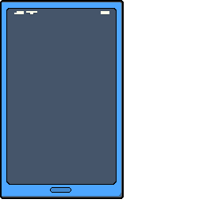
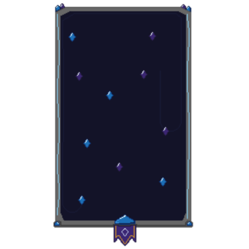
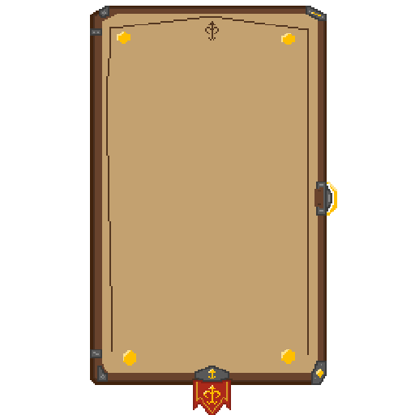

1.20.1 Forge
1.21.1 NeoForge
1.21.1 Fabric
MCA Social Expansion
Expande las relaciones de MCA con afinidad, romance, confianza, contactos, regalos, humor y conversaciones por interfaz.
- Mod ID
- mcasocial
- Version
- 0.8
- Tres interfaces sociales: Smartphone, Crystal Social y Letter Social.
- Sistema de afinidad, romance, confianza, fatiga social y roles familiares.
- Contactos, mensajes remotos, regalos, Conocer, humor y acciones de amistad.
MCA Social Expansion
MCA Social Expansion
Este bloque concentra todo lo que pertenece al mod Social Expansion: interfaces, sistemas, acciones sociales, regalos, Conocer y recetas.
Interfaces y objetos
Los tres objetos comparten el sistema social, pero cada uno comunica una fantasia visual distinta.

Social Smartphone
Interfaz moderna tipo app para contactos y conversaciones remotas.

Crystal Social
Interfaz magica para abrir el sistema social con estetica de cristal.

Letter Social
Interfaz de carta para una experiencia mas narrativa y clasica.